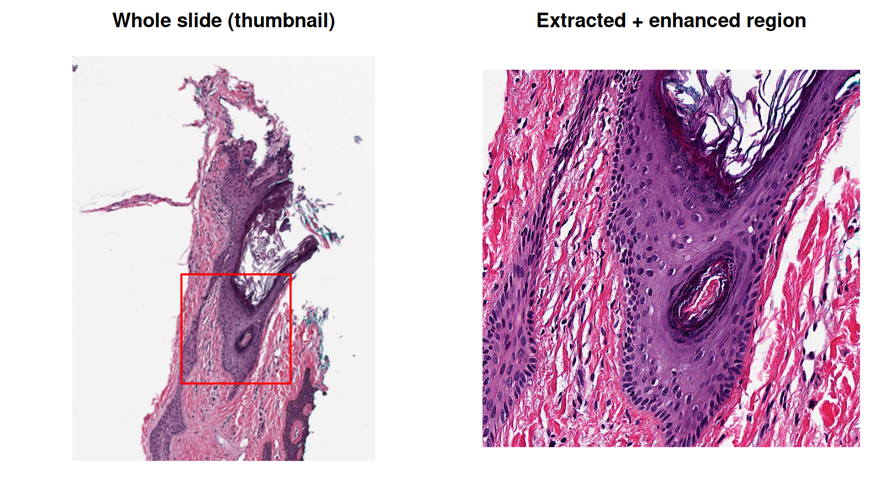

data_dir <- fs::path("data-raw")
fs::dir_create(data_dir)
svs_path <- fs::path(data_dir, "CMU-1-Small-Region.svs")
if (isFALSE(fs::file_exists(svs_path))) {
utils::download.file(
url = paste0(
"https://openslide.cs.cmu.edu/download/",
"openslide-testdata/Aperio/CMU-1-Small-Region.svs"
),
destfile = svs_path,
mode = "wb",
quiet = TRUE
)
}
fs::file_size(svs_path)
#> 1.85MWhole-Slide Pathology Images: Binary Pipelines Across Environments
Source:vignettes/articles/whole-slide-images.qmd
The Problem
Whole-slide images (WSI) used in digital pathology, files like Aperio .svs, Hamamatsu .ndpi, or MIRAX .mrxs, are not ordinary images. A single slide is a multi-resolution pyramid of tiled, compressed pixels that can be tens of gigapixels in size. Reading them requires the OpenSlide C library. In practice the only convenient, scriptable way to pull a region out of a slide is a tool built on top of it. The most common choices are a Python environment (openslide-python) or libvips compiled with OpenSlide support.
That creates a real dependency problem for an R user:
- Installing a Python/OpenSlide stack just to read one file format pollutes (or conflicts with) whatever environment your actual analysis lives in.
- The tool you’d use to look at the extracted region needs its own libraries. An image processing library like ImageMagick often needs a different set of compiled dependencies (its own
libjpeg,libpngandlibtiff). These can clash with the versions OpenSlide/libvipsneed. - None of this is reproducible unless the exact environments are pinned somewhere.
This article uses condathis to solve all three. Two CLI tools, each isolated in its own Conda environment, are connected by an operating system pipe. Binary image data streams from one environment straight into the other and finally back into R for plotting. Nothing is installed system-wide and nothing leaks between environments.
The Slide
We’ll use a real, public test slide from the OpenSlide project: a small region cropped from an Aperio .svs file, about 2 MB.
Two Isolated Toolchains
We need two tools that have no business sharing a Conda environment:
-
libvips, built with OpenSlide support, to open the.svspyramid and extract pixels from it. - ImageMagick, to post-process the extracted region.
create_env(
"conda-forge::libvips",
env_name = "wsi-vips-env",
channels = "conda-forge",
verbose = "silent"
)
create_env(
"conda-forge::imagemagick",
env_name = "wsi-magick-env",
channels = "conda-forge",
verbose = "silent"
)Each create_env() call resolves and installs its own dependency graph. libvips pulls in OpenSlide and openjpeg. ImageMagick pulls in its own delegate libraries. They never see each other.
Orienting Ourselves: a Thumbnail
Before extracting a region, let’s generate a small overview of the whole slide with a single run() call. vips thumbnail scales the pyramid down directly and never decodes full-resolution pixels.
Building the Pipeline
run_pipeline() chains two commands, in two different Conda environments, connected by a kernel-level pipe managed entirely by the child processes. The PNG bytes produced by vips crop never pass through R. They go straight into ImageMagick’s stdin.
Each command is described with run_step(). It takes the same command, arguments and env_name as run(), but it does not run anything by itself. It only records the command, and run_pipeline() then starts every step together and connects them.
region_png <- fs::file_temp(ext = "png")
# left, top, width, height (pixels) of the region to crop out of the slide
crop_box <- c(800, 1600, 800, 800)
pipeline_res <- run_pipeline(
run_step(
"vips", "crop", svs_path, ".png", as.character(crop_box),
env_name = "wsi-vips-env"
),
run_step(
"magick", "-",
"-modulate", "100,150,100", # boost saturation
"-sharpen", "0x1",
"png:-",
env_name = "wsi-magick-env"
),
stdout = region_png,
verbose = "silent"
)
pipeline_res
#> <condathis_pipeline (2 commands)>
#> status: OK
#>
#> [1] 'vips' 'crop' 'data-raw/CMU-1-Small-Region.svs' '.png' '800' '1600' '800' '800' (wsi-vips-env)
#> status: OK
#> [2] 'magick' '-' '-modulate' '100,150,100' '-sharpen' '0x1' 'png:-' (wsi-magick-env)
#> status: OKTwo details are load-bearing here:
-
stdin/-/png:-: the middle of the pipe is fully binary and never touches R.processxconnects the two child processes’ file descriptors directly. R handles only the first command’s stdin, the last command’s stdout, and each command’s stderr. Everything in between is a raw byte stream. -
stdout = region_pngonrun_pipeline(): it sends the last command’s stdout to a file. The defaultstdout = "|"capture decodes output as UTF-8 text, which would corrupt binary PNG bytes. Since the final artifact here is a binary image, we redirect it straight to a file instead of capturing it as a character string. To keep the bytes in memory instead, passbinary = TRUEtorun_pipeline(). The last command’s stdout then comes back as a raw vector, whichpng::readPNG()also reads.
Plotting the Result
With the pipeline’s output on disk, reading it into R is a normal png::readPNG() call.
region_img <- png::readPNG(region_png)
th <- dim(thumb_img)[1]
tw <- dim(thumb_img)[2]
# full-resolution width and height of the slide, in pixels
scale_x <- tw / 2220
scale_y <- th / 2967
rx0 <- crop_box[1] * scale_x
ry0 <- crop_box[2] * scale_y
rx1 <- (crop_box[1] + crop_box[3]) * scale_x
ry1 <- (crop_box[2] + crop_box[4]) * scale_y
withr::local_par(mfrow = c(1, 2), mar = c(1, 1, 2, 1))
plot(
c(0, tw), c(0, th),
type = "n", xlab = "", ylab = "", asp = 1, axes = FALSE,
main = "Whole slide (thumbnail)"
)
rasterImage(thumb_img, 0, 0, tw, th)
rect(rx0, th - ry1, rx1, th - ry0, border = "red", lwd = 2)
plot(
c(0, crop_box[3]), c(0, crop_box[4]),
type = "n", xlab = "", ylab = "", asp = 1, axes = FALSE,
main = "Extracted + enhanced region"
)
rasterImage(region_img, 0, 0, crop_box[3], crop_box[4])
The red box on the thumbnail marks exactly the region libvips cropped out of the pyramid. ImageMagick then boosted its saturation and sharpened it. R never holds a raw pixel buffer for anything but the final, already-small PNG.
Binary Data In: Raw Bytes as stdin
The pipeline above only needed a file as its output. run() and run_pipeline() also accept raw binary data as input, written directly to a process’s stdin. To show it, read the region PNG we just produced back into R as a raw vector. Then pipe those bytes into ImageMagick’s identify without writing anything new to disk:
png_bytes <- readBin(region_png, what = "raw", n = fs::file_size(region_png))
length(png_bytes)
#> [1] 1734194
identify_res <- run(
"magick", "identify", "-format", "%m %wx%h %z-bit %[colorspace]\\n", "-",
env_name = "wsi-magick-env",
stdin = "|",
input = png_bytes,
verbose = "silent"
)
parse_output(identify_res)
#> [1] "PNG 800x800 8-bit sRGB"-format limits the report to the format, size, bit depth and color space of the image. input accepts a character or raw vector. Here we pass the raw PNG bytes already sitting in R’s memory straight into the child process, with no temporary file involved.
Cleaning Up
remove_env(env_name = "wsi-vips-env")
#> ✔ Environment wsi-vips-env successfully removed.
remove_env(env_name = "wsi-magick-env")
#> ✔ Environment wsi-magick-env successfully removed.Why This Matters
-
Isolation:
libvips+OpenSlide and ImageMagick never share a dependency graph, so there’s no solver conflict to fight and each can be upgraded independently. -
True binary pipes: data moves between the two Conda environments as raw bytes over a kernel pipe, exactly like a shell
|. R handles only the first command’s stdin, the last command’s stdout, and each command’s stderr. -
Reproducibility: the whole toolchain, from slide to plotted region, is defined in this article. Anyone who runs it gets environments built from the same package specs. Pin the versions of
libvipsandimagemagickin thecreate_env()calls to get the same tools, and the same pixels, on every run.